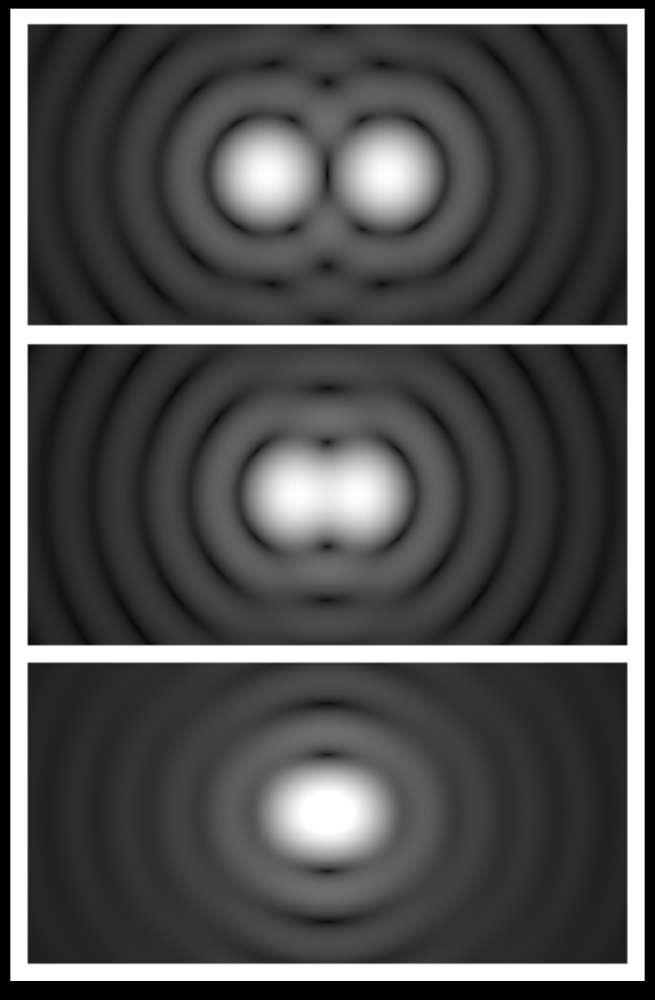

Forrige side🙂 🙁Vinkeloppløsning

Når et teleskop observerer et objekt på himmelen, blir dette objektet ’smørt utover’ pga. optikken samt forstyrrelser i atmosfæren. Dette gjør at et veldig lite punkt blir til en stor skive (se bildet). Når to objekter kommer for nær hverandre, vil de til slutt se ut som et enkelt objekt.
Oppløsningsevnen til et teleskop avgjør hvor nær objektene kan være før man ikke lenger kan skille de fra hverandre som to separate objekter. Vinkeloppløsningen (angular resolution) angies som den minste vinkelen som disse objektene kan være fra hverandre for å kunne skille de. Vinkelen det snakkes om her er vinkelen θ på de foregåede sidene. Når astronomer jobber med bilder av stjernehimmelen så er det vanlig å betegne avstanden mellom to objekter på bildet med angulæravstanden som igjen er den samme vinkelen definert i figuren på de foregående sidene. Neste side